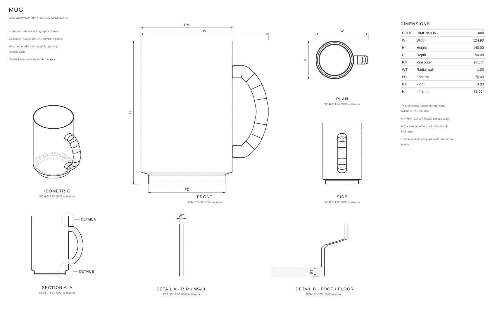

MUGDrawingmugRevisiondrawing-r1Part1 / 1UnitsmmScalePer view · SVG units/mmReview statusreviewed-provisionalSource and evidenceProject: 05-mug-provisional-reviewSTEP SHA-256: c24f97fd7f2859c3d6947c4bfe7e35b26a47641b02428ffe2c2c993bd684a932Review status is not manufacturing approval. Asterisks retain unconfirmed source dimensions.Fit whole sheetScroll inside the drawing to inspect details. Fit shows an overview.